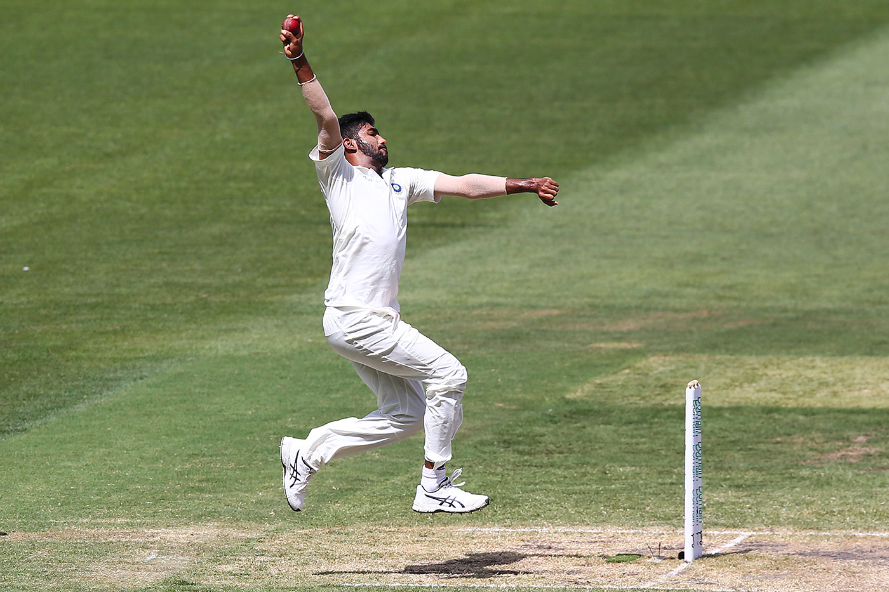
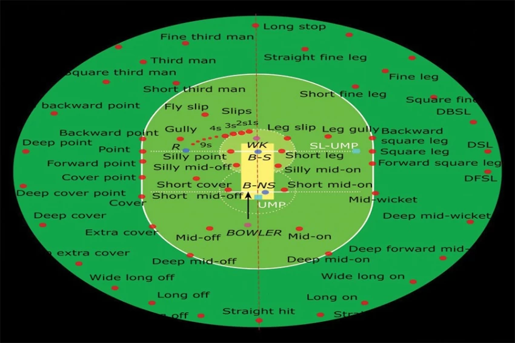

Batting Rules

Batsmen score runs by running between the wickets or hitting boundaries.
- Each batsman gets out when dismissed by the bowler or fielders.
- A six is scored when the ball crosses the boundary without touching the ground.
- A four is scored when the ball crosses the boundary after touching the ground.
Bowling Rules

The bowler attempts to dismiss the batsman by hitting the stumps or forcing an error.
- Each bowler is allowed a limited number of overs per match.
- No-ball and wide deliveries give extra runs to the batting team.
- A bowler can dismiss a batsman by clean bowling, LBW, or caught out.
Fielding Rules

Fielders attempt to stop runs and dismiss batsmen.
- Fielders can catch the ball to dismiss a batsman.
- Run-outs occur when fielders break the stumps before a batsman reaches the crease.
- Wicketkeepers play a key role in catching and stumping batsmen.